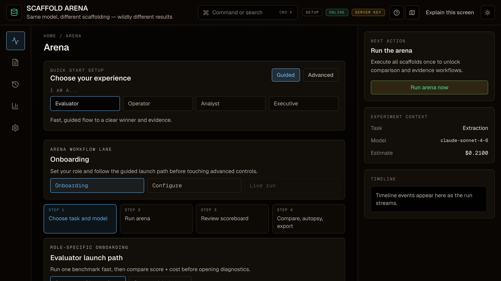
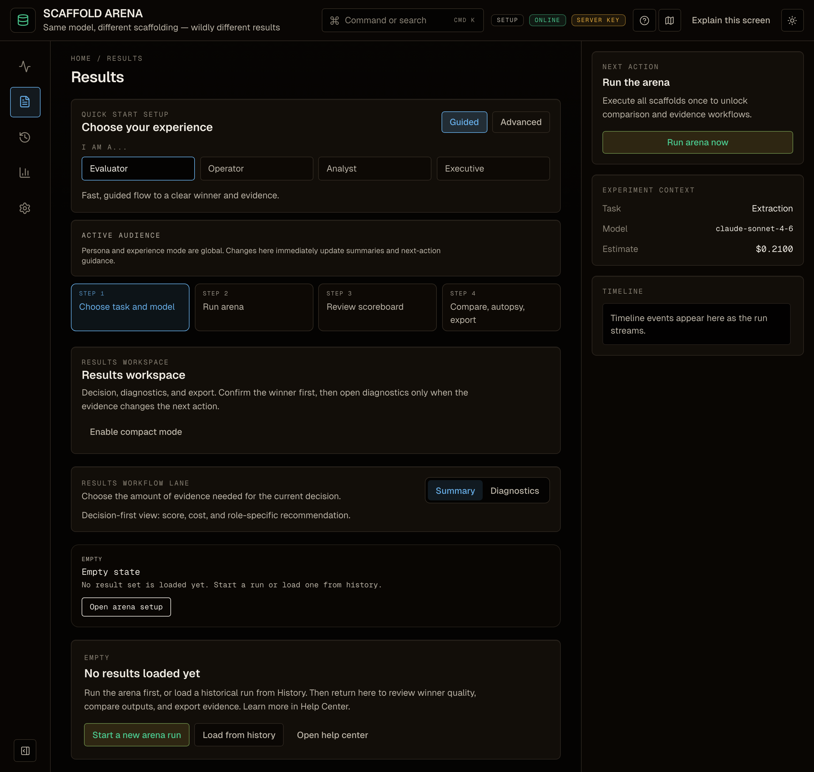

Scaffold Arena tests the orchestration around the model: prompts, verification, memory, recovery, and rerun strategy.
Missing fields
Stronger evidence
Patch candidate

Browser-native EventSource keeps the run observable: POST once, then GET-only SSE for every scaffold phase and delta.
Create run
Stream phases
Score together

Find missed fields, clauses, and citations.
Generate a machine-applicable scaffold change.
Replay only the scaffold that changed.
Compare the delta before declaring victory.
The trace audit CLI turns saved runs into ranked findings and regression keys. It is deterministic, offline, and ready for CI.
Same model. Different scaffolding. Wildly different outcomes.